Introduction
Shopping shouldn’t mean waiting
Large retail chains like Willys, Coop, ICA, and Lidl have long relied on cashier queues and shared handheld scanning devices. For many shoppers, both create friction — and for some, they are a genuine barrier.
The Focalpay mobile shopping app reimagines the entire in-store journey. Shoppers open the app, scan products directly with their own phone as they shop, and check out by scanning a single QR code mounted on the store wall — from anywhere in the store, no queue required. If they want to pay cash, one tap transfers their cart to the cashier terminal.
I owned this project end-to-end: from competitor research and user interviews through to final screens, interaction design, and usability validation with real shoppers in live store environments.
Onboarding
Setting expectations before the first scan
Before someone scans their first product, they need to understand how this store’s flow works — where to scan, when to pay, and how they leave with a receipt. A short, skippable carousel walks new shoppers through the journey in plain language so the physical steps feel familiar before they rely on the app under time pressure.
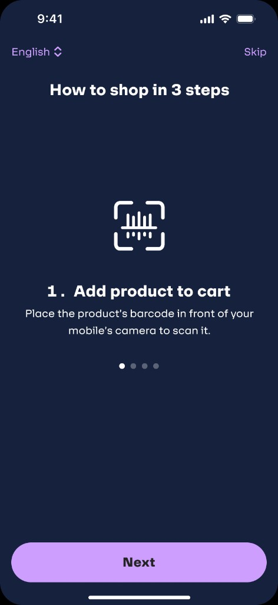
Step 1 · Add product to cart
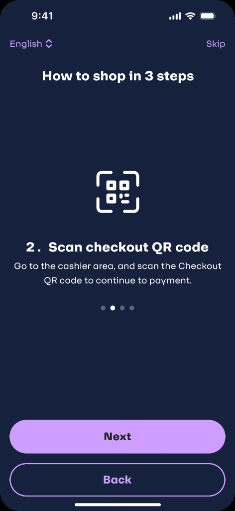
Step 2 · Scan checkout QR
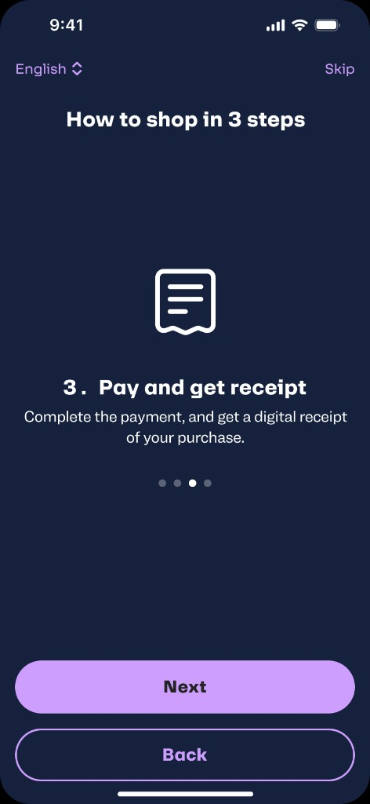
Step 3 · Pay and get receipt
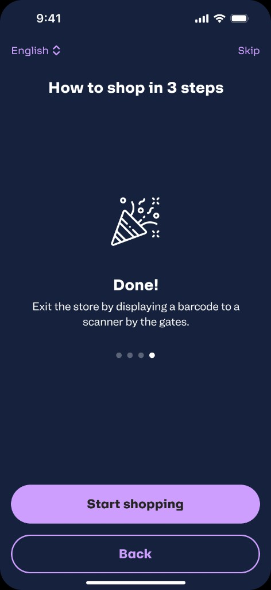
Step 4 · Done — start shopping
User Experience Research Findings
What the numbers told us
We surveyed eight frequent shoppers in Swedish retail stores to validate the hypothesis that existing self-checkout solutions were failing real users. The data confirmed two distinct pain points — and pointed directly to the solution.
Cumbersome self-scanning devices
22% of users reported dissatisfaction with carrying a separate self-scanning device, finding it disruptive to their shopping experience. They expressed a strong preference for scanning items directly with their smartphone.
Frustrating checkout queues
36% of users identified long checkout queues as a major pain point, expressing a clear desire for a quicker, mobile-based checkout process that would eliminate the need to wait in line.
“While some were surprised by the idea of using a self-scanning by mobile, others were more accepting — noting that the convenience of having it directly in their pocket made it an appealing option.”
— Survey synthesis · 8 participants · Swedish retail storesCompetitor Analysis
Addressing retail pain points
Before designing the first prototype, I mapped the existing self-checkout landscape across Swedish grocery retail — identifying where competitors were creating new problems as much as solving old ones.
Affinity Mapping · Card Sorting
Brainstorming & prioritisation
After synthesising research findings, I ran a card sorting session with the product team to organise feature ideas by user need. This helped us move from a long list of possibilities to a clear, prioritised roadmap — ensuring we built the things that mattered most first.
One early tension: should we ask users to sign up before they can shop? The data said no. Forcing account creation at entry is a well-documented conversion killer. We deferred it to checkout — when the user is already invested and motivated to complete the purchase. This single decision had the largest measurable impact on funnel completion rates.
User Research · Persona
The shopper we designed for
Research revealed a clear segment that existing solutions were failing: parents shopping with young children, particularly those managing additional accessibility needs. Their pain was structural — a fundamental mismatch between the shopping environment and their daily reality.
“I used to dread grocery shopping with the kids. Now I just open the app, scan as I go, and I’m done before I even reach the exit.”
— Sara, post-launch interviewMethods & Research
Understanding the real friction
Research started with competitor analysis — studying existing self-checkout flows at ICA, Coop, Willys, and Lidl. That baseline informed the first prototype, which was then tested with real shoppers in actual store environments.
ICA, Coop, Willys, Lidl, Hemköp — mapped their self-checkout models, flow structures, and known usability failures from public data and in-store observation.
Surveyed frequent shoppers in Swedish retail stores to quantify pain points around handheld devices and checkout queues — validating the hypothesis with concrete data before designing.
Recruited shoppers with specific needs — parents with young children, users with accessibility requirements — to surface pain points that standard personas miss.
Tested prototypes with real users in actual stores. Observed behaviours under genuine shopping conditions — not a lab, not a simulation. Key features like manual barcode entry emerged here.
Discover
What was actually broken
Traditional in-store checkout systems were designed around infrastructure, not people. The problems weren’t minor inconveniences — for many shoppers, they were real barriers to completing a purchase.
Shared devices, shared problems
Store-provided handheld scanners require a free hand and full attention. For parents with strollers or shopping lists on their phone, they are practically unusable.
Queue as a barrier
For shoppers with sensory-sensitive children, chronic pain, or time pressure, standing in a cashier queue is not just inconvenient — it’s a reason to shop elsewhere.
Silent scan failures
In a busy store, users couldn’t tell if a scan had worked. Products were scanned twice. Users gave up. The interface gave no meaningful feedback across any sensory channel.
Unreadable barcodes, dead ends
When a barcode wouldn’t scan, the app offered no recovery path. Users were stranded. This only surfaced during real-world testing — lab conditions never revealed it.
“We want something that just works. Our customers shouldn’t have to think about the checkout — it should just happen.”
— Store Manager, Usability Research SessionDesign Solutions
Fast, tested, iterated
Every screen was designed around one principle: the phone already in the shopper’s hand should be the only device they need — even while pushing a stroller, checking a list, and keeping an eye on two children at the same time.
The moment a user opens the app, the camera is live and the cart is visible — no navigation required. Scanning a product adds it instantly. The cart, total, and key actions (Add bag, Baked goods, Manual barcode entry) are always one tap away. There is no separate “scan mode” — the entire experience is the scan mode.
Three accessibility shortcuts live permanently on the home screen. Bags can be added without scanning. Baked goods — which often lack machine-readable codes — have their own browsable category. Manual barcode entry was added directly as a result of usability testing: users who encountered damaged barcodes had no recovery path in v1. The fix was a simple numeric input — discovered through observing real shoppers, not invented in a brief.
When ready to pay, the user taps “Go to payment” and the camera opens to scan the large QR code mounted on the store wall. The code is designed to be readable from up to 10 metres away — meaning a shopper can check out without ever joining a queue or reaching the checkout area. One scan. No waiting.
The app supports Apple Pay, Swish, card (scan or manual entry), and cash. Cash users are not excluded — one button transfers their cart to the nearest cashier terminal instantly, with no re-scanning. Card onboarding is deferred to checkout: sign-up friction was deliberately removed from the entry experience to keep top-of-funnel abandonment low.
After payment, the receipt screen displays a QR code for the store exit gate. The shopper scans it on the way out — the gate opens. Simple, invisible security. The receipt is also stored in purchase history with product details, total, and discount breakdown available later.
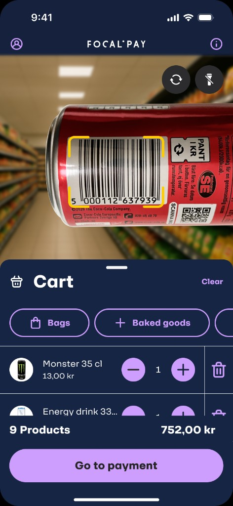
Home · scanner + cart
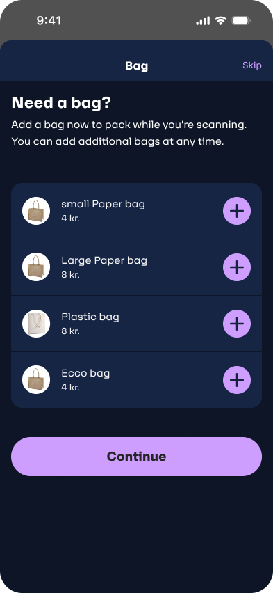
Add bag flow
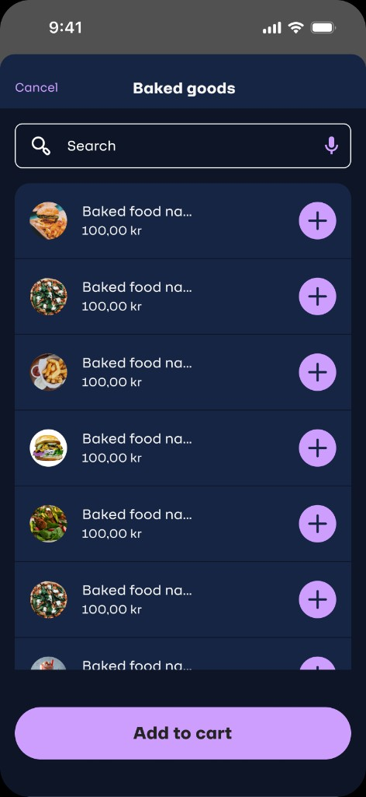
Baked goods category
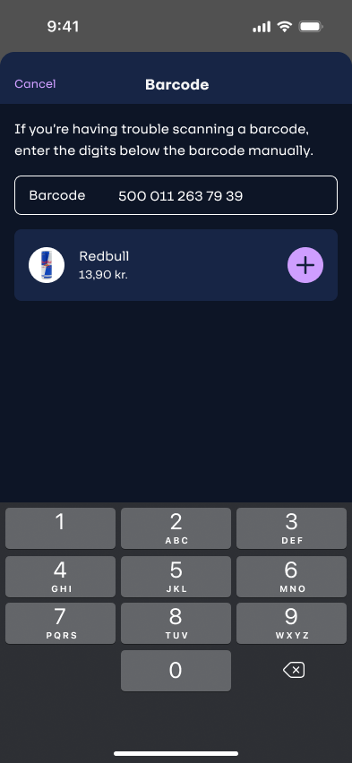
Manual barcode entry
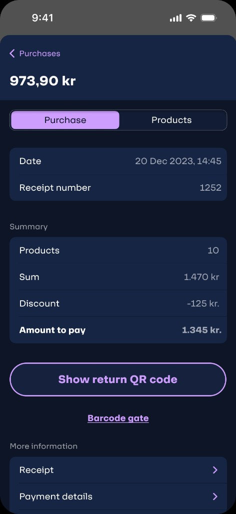
Payment summary
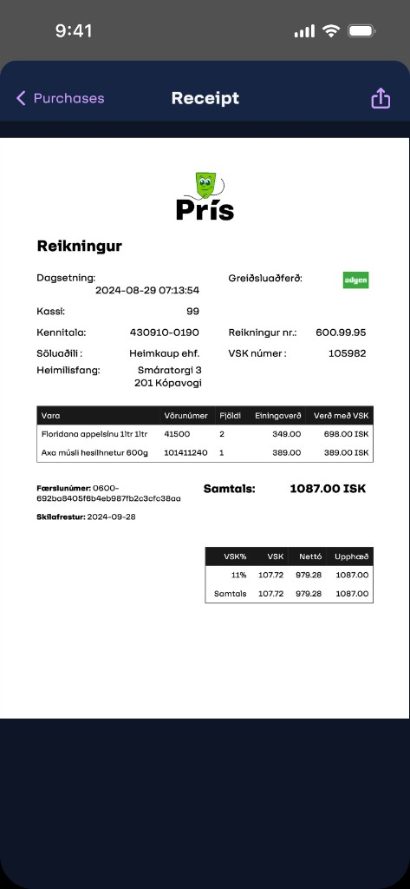
Digital receipt
Key Insight · Usability Testing
The silent scan problem
During testing, we noticed something that looked like hesitation but was actually confusion. Users would scan a product and then pause — staring at the screen, unsure if it had actually worked. Some scanned the same item twice. Some stopped shopping altogether.
The interface was too quiet. In a busy store with ambient noise, trolleys, children, and movement, a visual-only confirmation is nearly invisible. We needed the scan to feel like it worked — not just look like it.
Designed to confirm a successful scan across every sensory channel — following WCAG guidance that state changes must never rely on a single modality.
“Users stopped hesitating. They scanned and moved — confident the app had done its job. That shift in body language was visible in real time during testing.”
— Usability testing observation notesUser Journey Map
From entrance to exit gate
Mapped across Sara’s full shopping journey — from opening the app in the car park to scanning the exit gate QR. Emotion peaks and troughs informed where design intervention mattered most.
| Stage | Action | Emotion | Pain point | Design response |
|---|---|---|---|---|
App open |
Opens app, camera activates immediately | Confident | None — no forced sign-up, camera is live instantly | Camera-first experience removes all entry friction |
Scanning products |
Scans barcodes while shopping, one hand on stroller | Engaged | Uncertain if scan worked — looks for visual confirmation | 3-layer feedback: animation + haptic vibration + audio cue |
Unreadable barcode |
Tries to scan damaged barcode, camera fails | Frustrated | No recovery path in v1 — user is stranded with no clear next step | Manual barcode entry added after usability testing revealed this dead end |
Baked goods |
Taps “Baked goods” for items without scannable codes | Relieved | Baked items rarely have reliable barcodes — previously a dead end | Dedicated category accessible directly from home screen |
Cart review |
Reviews cart, adjusts quantities, checks total | In control | Wants to confirm everything before committing to checkout | Cart always visible on home screen — no navigation required |
QR checkout |
Taps “Go to payment”, scans store wall QR from distance | Delighted | Expected a queue — surprised by 10m scan range | Large-format QR readable from distance — zero queue experience |
Payment |
Pays via Apple Pay, card scan, Swish, or cash transfer | Satisfied | Card details needed — deferred from onboarding, now required | Card scan via camera or manual entry · Multiple payment methods |
Exit gate |
Scans exit QR from receipt screen at store gate | Confident | Gate is the final moment of doubt — did everything go through? | Clear exit QR on receipt screen — gate opens, experience complete |
Results
Measurable impact
Outcomes were validated through usability testing with real shoppers in live store environments. The three-layer scan feedback system alone drove a step-change in completion rates — and double-scans effectively disappeared.
“I used to dread grocery shopping with the kids. Now I just open the app, scan as I go, and I’m done before I even reach the exit.”
— Sara, post-launch interview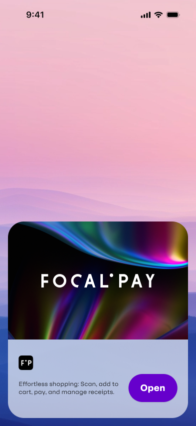
0 · Splash
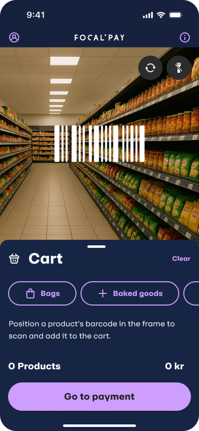
1 · Empty cart
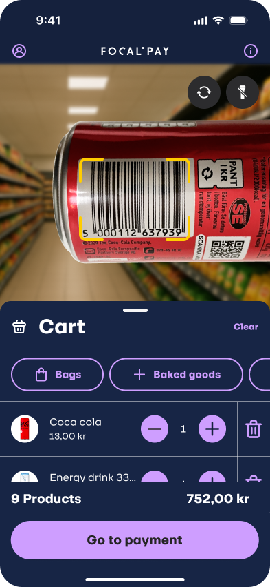
2 · Scanner + cart

3 · Manual barcode

4 · Baked goods

5 · Add bag
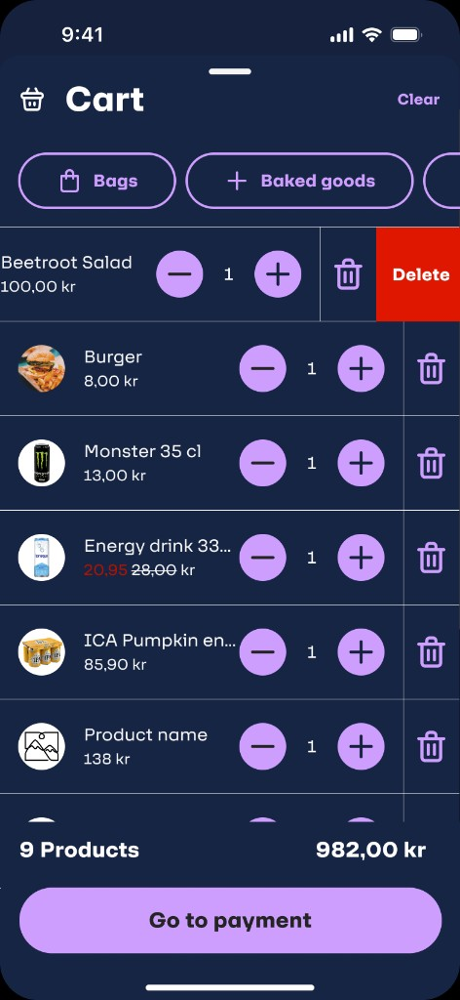
6 · Cart
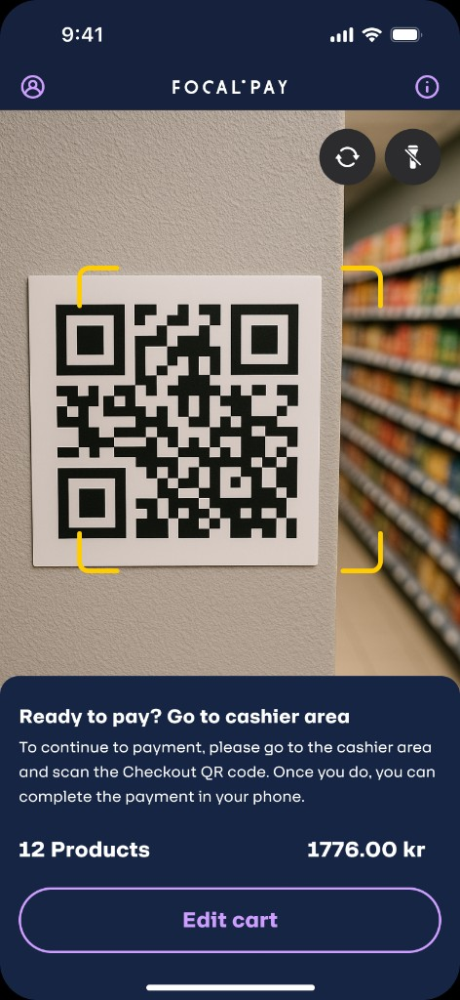
7 · Scan QR to checkout
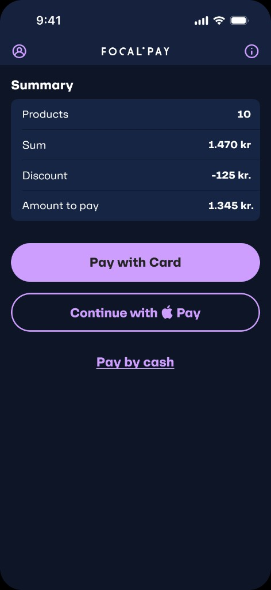
8 · Payment summary
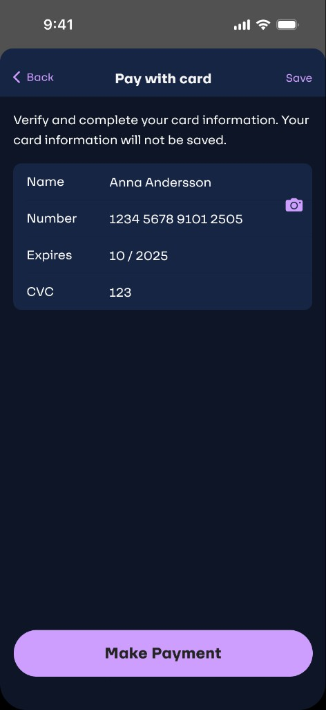
9 · Add card
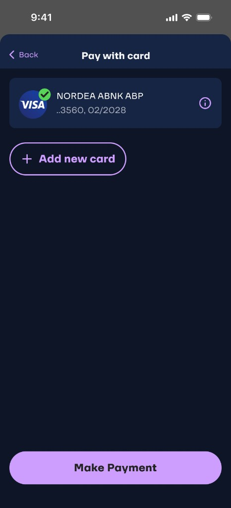
10 · Card on file
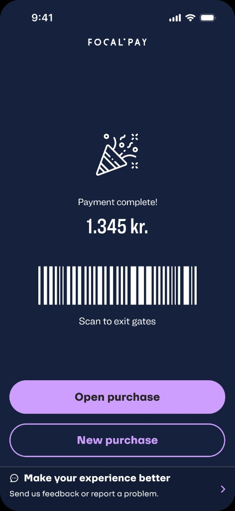
11 · Payment complete

12 · Purchase detail

13 · Digital receipt
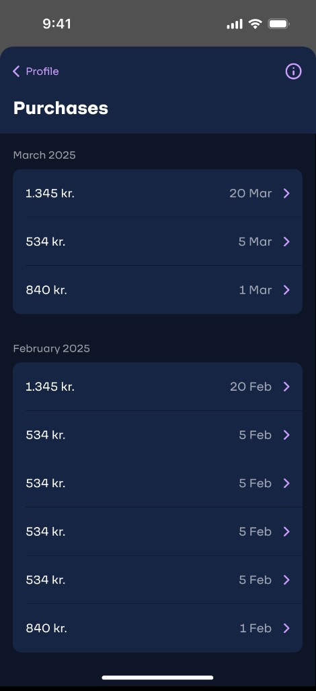
14 · Purchases
Reflection
What this project taught me
The unreadable barcode dead end and the scan feedback gap were both invisible in early prototype testing. They only appeared when real shoppers, under real pressure, used the app in a live store. There is no substitute.
In a noisy retail environment, visual-only confirmation is nearly useless. Designing for all sensory channels isn’t a nice-to-have — in mobile contexts, it’s what makes the difference between confidence and hesitation.
Not asking for sign-up at onboarding was deliberate. Moving card entry to checkout was the right call — conversion at entry went up, and by checkout users were already invested. Friction at the right moment builds trust.
Designing for Sara — a stroller, two children, and no free hand — produced a checkout flow faster and more pleasant for every type of shopper. Accessibility constraints don’t limit design; they sharpen it.